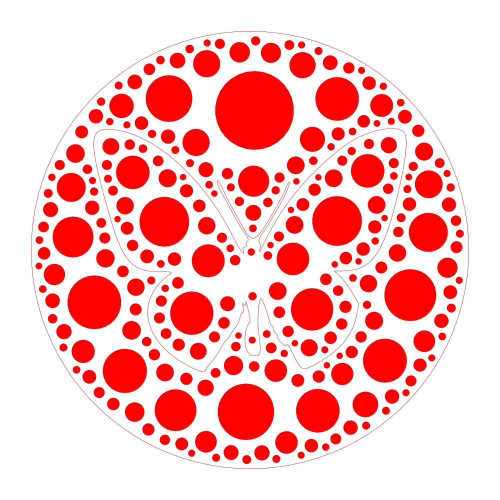
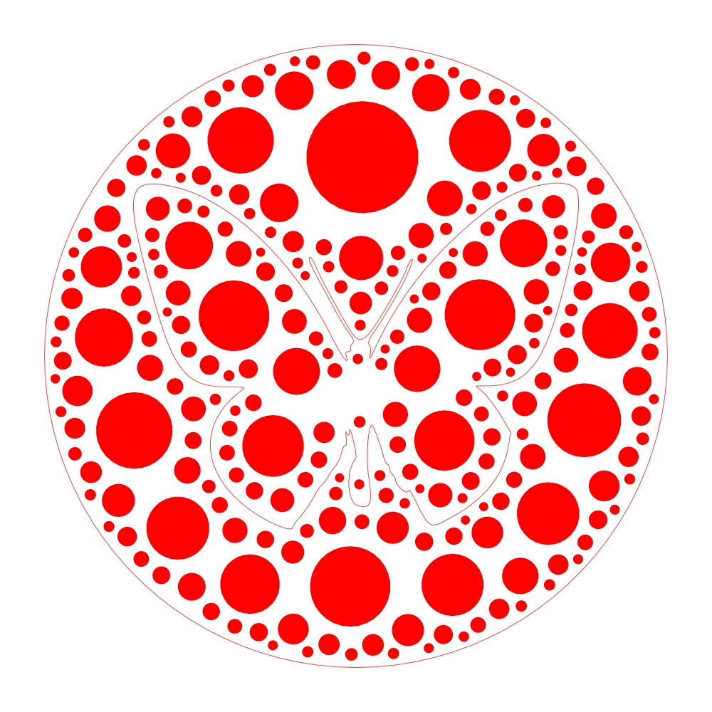

Making of paper cut butterfly
Welcome to my second tutorial post on generative art.
I am going to describe here the process to generate the following artwork, entitled Cut Butterfly_1434337762][Paper Cut Butterfly]]

This tutorial is going to be quite fast-paced, so if you have any question, please feel free to enter them below as a commentary.
Contour
The first thing necessary to compute this image is to get a proper vector contour. I choose to use SVG contour, as they are easy to parse, and can be easily generated with open-source tools like Inkscape Here it is:
Once we have got the proper SVG file, we can get the corresponding path specification of the shape (a SVG path), then parse it to build a polybezier curve.
Polybezier
A polybezier curve is simply a list of adjacent atomic bezier curves that defines the contour. I use a custom library (basically a translation of my Ruby XRVG library, in python) to both parse the SVG path, and handle the resulting object.
One thing to note in particular, when dealing with bezier curves, is that they are parametric curves, but their parameter is not linear: if you sample a bezier curve with a linear sampling of its parameter, you will not get an evenly distributed set of points (it can actually give you some pretty cool distribution though ...). To be able to sample properly such a curve, a proper linearisation of it must be done. I will not describe here this matter that will hopefully be the subject of another post.
Let just note that the polybezier object is also used to abstract this linearisation, that gives access to all the curve properties that we need for the rest of the generative process. Here is a representation of the polybezier curve with its control points:

Seed
Once we have got access to the contour properties, we need to do 2 things.
First, we need to compute the viewbox of the contour, and from there to compute the enclosing circle, for the exterior boundary.
Then, we need to compute a string of adjacent circles on this contour and this boundary, first to define collision boundaries, and then to define seeds for the optimization process, a seed being a pair of adjacent circles chosen from the string.
Here is a large-grained picture of the circles strings defined on the two contours:
Maximum Circle Packing
Once we have got the seeds, we can start to compute the maximum circle packing diagram, that is the diagram made of circles which have maximum radius and are enclosed in the contour (so are not colliding with any other circle).
To compute those circles, we compute for each seed the maximum-sized adjacent circle that can be defined by them (by a short optimization process), and then choose the largest one among the seeds. Once we have got the maximum-sized circle for this iteration, we keep it in the result, and add it in the collision buffer list. As an additional trick, we can instead add a modified version of the circle, by decreasing its radius, to give more space to the next circles.
Hereafter you can see the result of this computation for different numbers of circles (1, 16, 256 and 2048), with a radius ratio of 0.5.
 


Voronoi
I will not explain here the nature of a Voronoi diagram (you can check for example here but it is enough to say that this kind of diagram is ubiquitous in Nature, and usually leads to beautiful generative designs.
For this artwork, I use the centers of the maximum circles previously computed to obtain two Voronoi diagrams, one inside the butterfly and one outside the butterfly but inside the enclosing circle. It's worth mentionning that Voronoi polygons are trimmed from the computational raw results, to keep only those that are completely contained inside the contours.
Conclusion
And that's it ! I must confess I left unexplained quite a number of details, in particular the different optimizations needed with the maximum circle packing algorithm, the quadtree used to compute effectively collisions, the algorithm to compute the circle strings, but the main principles are there.
I would also like to highlight that this process is only a framework, and can be fine-tuned in lots of different ways: the contour obviously, the colors, but also the distribution of the seeds, the size of maximum circles after computation, and so on !
Please let me know if you have found this tutorial interesting, and if you would like me to explain more in details some particular points.